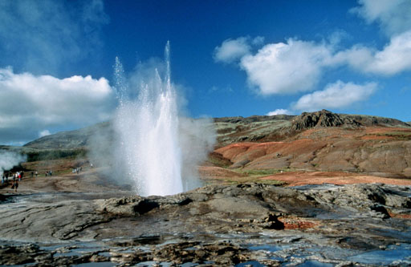

Islandia (en islandés: Ísland, AFI: ['istlant]) es un país insular europeo, cuyo
territorio abarca la
isla homónima y algunas pequeñas islas e islotes adyacentes en el océano Atlántico. Su capital es
Reikiavik. Cuenta con una población de cerca de 366.425 habitantes y un área de 103 000 km2. En
Reykjavík y sus alrededores en el suroeste del país viven más de dos tercios de la población.
Etimiología
El primer nombre del país fue Snæland (‘tierra de nieve’), acuñado por el
navegante vikingo Naddoddr, uno de los primeros pobladores de las islas Feroe.
Gardar Svavarsson, uno de los primeros islandeses, rebautizó la isla como Garðarshólmur
(‘islotes de Gardar’).
Geografía, Geología y Clima
Geografía
Islandia está situada en el océano Atlántico al sur del círculo polar ártico, que pasa
a través de la pequeña isla de Grímsey. A diferencia de Groenlandia, su vecino, forma parte de Europa,
no de América del Norte, aunque geológicamente la isla se ubica entre ambas placas continentales. El
país se encuentra entre las latitudes 63 y 68°N y las longitudes 25 y 13°W. Las islas más cercanas al
país son Groenlandia (a 287 km) y las Islas Feroe (a 420 km). La distancia más cercana a la parte continental
de Europa es de 970 km, hacia Noruega.
Islandia es la 18ª isla más grande del mundo y la segunda más grande de Europa, después de
Gran Bretaña.
La isla principal cuenta con 101 826 km2, pero la superficie total del país asciende a 103 000 km2,
un área similar a la de Cuba o Guatemala en América. El 62,7 % es tundra.
A su alrededor se cuentan hasta 30 islas menores, incluyendo la isla habitada de Grímsey y el archipiélago de
las Islas Vestman.
Geología

La foto muestra un cielo azul con nubes y un paisaje rocoso, con un géiser estallando directamente en el
aire en el medio.
Leyenda: El Geysir en erupción en el valle de Haukadalur, el géiser más antiguo conocido del
mundo.
Geológicamente, es parte de la dorsal mesoatlántica, la cordillera a lo largo de la cual la corteza oceánica
se forma y se propaga.
Además, se encuentra sobre un punto caliente, donde el magma se acumula por debajo de la corteza terrestre.
Clima
El clima de la costa islandesa se clasifica como subpolar oceánico, es decir,
tiene veranos frescos y breves, con inviernos suaves (comparado con otros países europeos) y la
temperatura llega a descender hasta -10 °C, en la capital. La corriente cálida del Golfo provoca
temperaturas medias anuales mayores que las que se presentan en latitudes similares en otras partes del
mundo. Las costas de la isla se mantienen sin hielo durante el invierno, y a pesar de su cercanía al
Ártico esto se presenta muy rara vez, siendo la última de ellas registrada en la costa norte, en 1969.